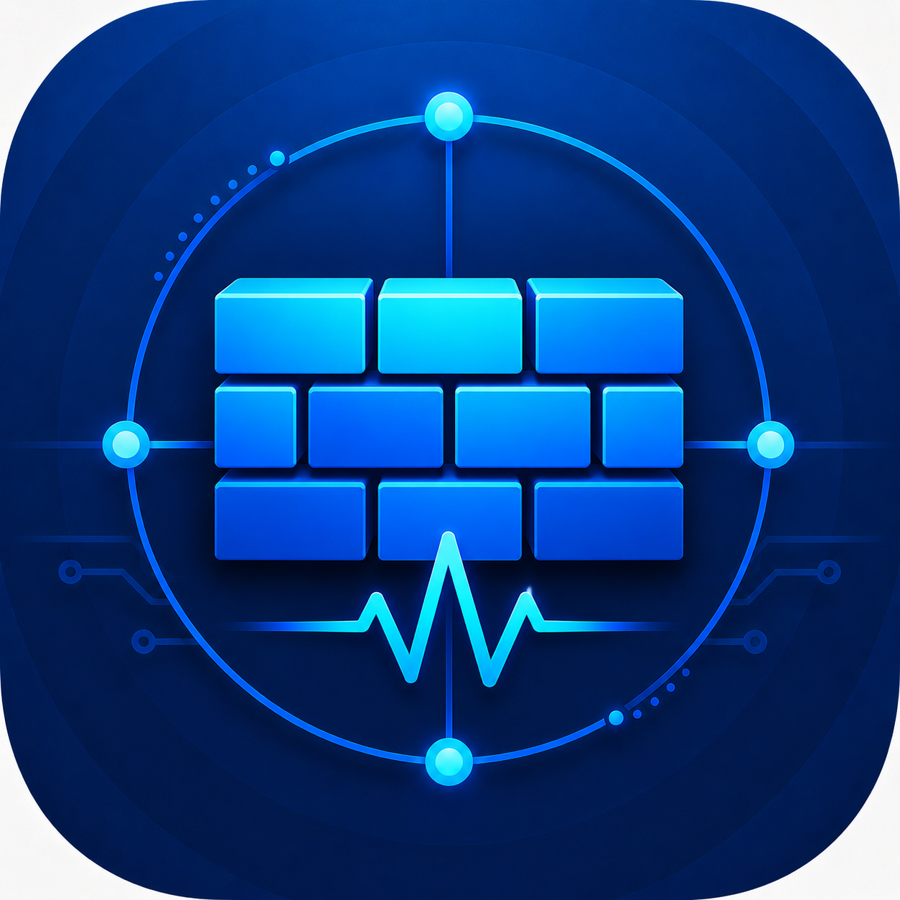
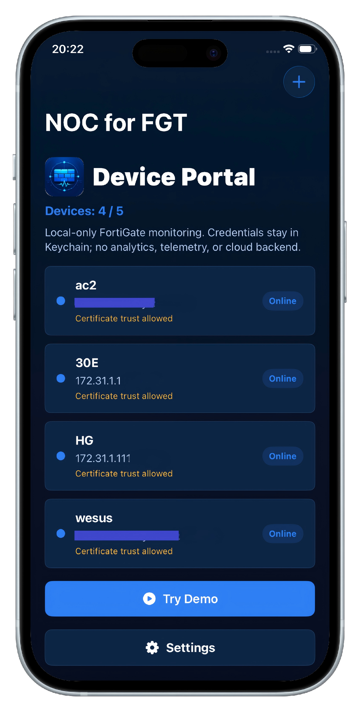
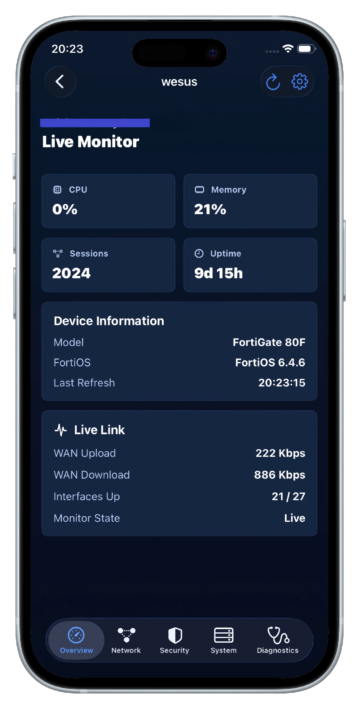
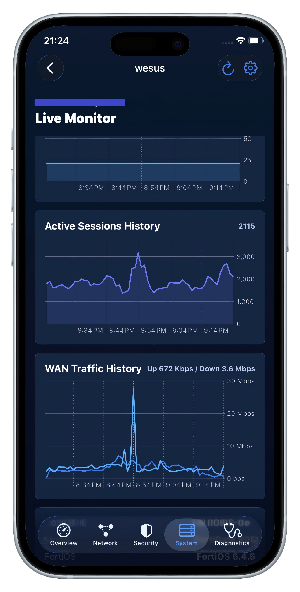

Device overview
See connection state, firmware, uptime, resource pressure, and live device identity in one place.

NOC for FGT
FortiGate visibility for iPhone and iPad
Monitor FortiGate health, interfaces, system status, and security posture from a focused native companion app built for operators.
Operational overview
NOC for FGT keeps the first screen practical: device reachability, health signals, interface state, system load, and quick access to diagnostics.


Core functions
See connection state, firmware, uptime, resource pressure, and live device identity in one place.
Review link status, addressing, aliases, roles, traffic counters, and operational state without opening the firewall console.
Track CPU, memory, session, and throughput history so short spikes are easier to understand.
Surface security-relevant state such as services, protection status, and attention items from supported FortiGate APIs.
Keep routine read-only diagnostic checks close to the device context for faster troubleshooting.
Use expanded layouts on larger screens for broader status panels and more comfortable monitoring sessions.
Security model
No cloud relay. The app is designed to connect directly to FortiGate devices configured by the user.
Credentials stay local. Login data is handled on device and should be stored using the iOS Keychain.
User-controlled certificate trust. When a trusted certificate exception is enabled, certificate fingerprints can be recorded so certificate changes are visible to the user.
Read-focused workflows. Monitoring screens prioritize observation and diagnostics over broad configuration changes.
Ready for GitHub Pages
This site is plain HTML and CSS. It can be published from a GitHub repository without a build step.